library(tidyverse)
library(readxl)
library(psych)
encuesta <- readRDS("checkpoints/encuesta_limpia.rds")Sesión 2. Transformar y visualizar datos
Curso de iniciación a R. Departamento de Ciencias de la Educación, Universidad de Alcalá
| Bloque | Contenido | Tiempo aprox. |
|---|---|---|
| 2.1 | Transformar datos con dplyr |
40 min |
| 2.2 | Recodificar, puntuar y resumir | 25 min |
| Ejercicio 1 y puesta en común | 25 min | |
| Descanso | 15 min | |
| 2.3 | Reorganizar y combinar tablas | 25 min |
| 2.4 | Gráficos con ggplot2 |
45 min |
| 2.5 | Primeros análisis | 20 min |
| 2.6 | Resultados en Quarto y tu propio proyecto con renv |
15 min |
| Ejercicio 2 y puesta en común | 25 min |
Recuerda: los ejercicios están en sesion2_ejercicios.qmd.
Partimos de los datos que limpiamos en la sesión 1:
2.1. Transformar datos con dplyr
TipObjetivo
Seleccionar, filtrar, ordenar, crear variables y resumir datos por grupos: las operaciones que harás en todos tus análisis.
Punto de control: encuesta <- readRDS("checkpoints/encuesta_limpia.rds")
El tidyverse y la “tubería” |>
El tidyverse es un conjunto de paquetes diseñados para el análisis de datos que comparten una misma filosofía y “gramática”: readr (importar ficheros de texto), tibble (tablas), dplyr (transformar), tidyr (reorganizar), ggplot2 (gráficos), entre otros. Con library(tidyverse) se cargan todos.
El paquete central para transformar datos es dplyr, que ofrece un conjunto de verbos (funciones) con nombres que dicen lo que hacen. Todos reciben una tabla como primer argumento y devuelven otra tabla.
Por eso se pueden encadenar con el operador |> (pipe o tubería, atajo Ctrl+Shift+MCtrl+Shift+M): el resultado de la izquierda pasa como primer argumento a la función de la derecha. Es decir, x |> f() es lo mismo que f(x):
notas <- c(6.5, 8.0, 4.5, 9.2, 5.0)
round(mean(notas), 1) # se lee de dentro afuera[1] 6.6notas |> mean() |> round(1) # se lee de izquierda a derecha[1] 6.6La tubería se lee como “y después”:
encuesta |> # toma la encuesta, y después
filter(...) |> # quédate con algunas filas, y después
select(...) |> # quédate con algunas columnas, y después
summarise(...) # resumeDentro de los verbos de dplyr, las columnas se escriben sin encuesta$ y sin comillas: el verbo ya sabe en qué tabla buscarlas.
Los verbos no modifican la tabla original: devuelven una nueva. Si queremos guardar el resultado, lo asignamos a un nombre:
resultado <- encuesta |>
filter(...)Operaciones con filas
Filtrar filas que cumplen una condición, con filter(). Se usan las comparaciones de la sesión 1:
encuesta |>
filter(curso == "1º ESO")# A tibble: 78 × 19
marca_temporal id centro curso sexo edad m1 m2 m3 m4 a1
<chr> <chr> <fct> <fct> <fct> <dbl> <dbl> <dbl> <dbl> <dbl> <dbl>
1 05/10/2026 10:2… E001 C08 1º E… Chico 13 2 1 2 4 4
2 05/10/2026 13:5… E002 C03 1º E… Chico 13 4 3 3 2 4
3 05/10/2026 19:0… E009 C07 1º E… Chico 13 4 4 4 2 NA
4 05/10/2026 19:4… E010 C03 1º E… Chica 12 5 5 5 2 5
5 06/10/2026 02:0… E015 C02 1º E… Chica 13 3 3 4 3 3
6 06/10/2026 06:2… E020 C02 1º E… Pref… 12 2 4 2 5 4
7 06/10/2026 08:4… E024 C02 1º E… Chica 12 3 4 4 1 1
8 07/10/2026 04:2… E039 C05 1º E… Chico 12 4 3 3 3 2
9 07/10/2026 05:3… E040 C01 1º E… Pref… 12 5 5 5 1 3
10 07/10/2026 08:2… E043 C01 1º E… Chico 13 4 4 3 2 4
# ℹ 68 more rows
# ℹ 8 more variables: a2 <dbl>, a3 <dbl>, a4 <dbl>, ae1 <dbl>, ae2 <dbl>,
# ae3 <dbl>, ae4 <dbl>, nota <dbl>Varias condiciones separadas por comas deben cumplirse todas (equivale a &). Para “una u otra”, |:
encuesta |>
filter(curso == "4º ESO", nota < 5)# A tibble: 17 × 19
marca_temporal id centro curso sexo edad m1 m2 m3 m4 a1
<chr> <chr> <fct> <fct> <fct> <dbl> <dbl> <dbl> <dbl> <dbl> <dbl>
1 06/10/2026 05:2… E019 C07 4º E… Chico 15 2 2 1 5 2
2 06/10/2026 10:4… E026 C02 4º E… Chica 15 3 2 3 4 3
3 06/10/2026 21:1… E035 C03 4º E… Chica 16 2 3 3 3 4
4 07/10/2026 00:4… E037 C07 4º E… Chico 15 2 1 1 5 4
5 08/10/2026 06:1… E067 C08 4º E… Chica 15 3 2 3 4 5
6 08/10/2026 22:4… E089 C07 4º E… Chico 15 NA 2 2 5 1
7 09/10/2026 02:5… E094 C07 4º E… Chica 15 2 3 3 4 4
8 10/10/2026 10:2… E117 C03 4º E… Chica 16 2 2 2 5 5
9 11/10/2026 13:2… E144 C08 4º E… Chica 15 4 4 4 2 3
10 11/10/2026 21:4… E155 C05 4º E… Chica 16 1 1 2 4 2
11 12/10/2026 01:3… E161 C02 4º E… Chico 15 1 1 1 NA 4
12 13/10/2026 03:0… E190 C01 4º E… Chica 15 1 1 2 5 4
13 13/10/2026 15:1… E194 C09 4º E… Chico 15 3 4 2 2 3
14 14/10/2026 18:2… E219 C02 4º E… Chica 15 2 2 2 5 4
15 15/10/2026 04:5… E229 C07 4º E… Chico 15 1 1 2 5 4
16 17/10/2026 15:3… E278 C08 4º E… Chica 16 2 NA 2 5 2
17 19/10/2026 07:1… E319 C08 4º E… Chica 15 3 3 4 4 5
# ℹ 8 more variables: a2 <dbl>, a3 <dbl>, a4 <dbl>, ae1 <dbl>, ae2 <dbl>,
# ae3 <dbl>, ae4 <dbl>, nota <dbl>encuesta |>
filter(nota >= 9.5 | nota < 2)# A tibble: 15 × 19
marca_temporal id centro curso sexo edad m1 m2 m3 m4 a1
<chr> <chr> <fct> <fct> <fct> <dbl> <dbl> <dbl> <dbl> <dbl> <dbl>
1 05/10/2026 19:4… E010 C03 1º E… Chica 12 5 5 5 2 5
2 05/10/2026 23:4… E013 C07 2º E… Chico 14 3 3 5 2 NA
3 06/10/2026 21:1… E036 C01 2º E… Chico 13 1 2 1 5 4
4 08/10/2026 00:5… E060 C07 3º E… Chica 14 1 1 1 4 5
5 08/10/2026 01:3… E062 C09 3º E… Chica 14 5 4 5 2 2
6 08/10/2026 18:0… E082 C06 3º E… Chica 14 4 NA 5 2 2
7 09/10/2026 02:5… E095 C07 2º E… Chico 14 4 4 4 3 2
8 11/10/2026 23:2… E157 C01 2º E… Chico 13 1 NA 2 4 3
9 12/10/2026 01:3… E161 C02 4º E… Chico 15 1 1 1 NA 4
10 12/10/2026 03:3… E167 C02 1º E… Chica 12 4 5 4 1 1
11 13/10/2026 23:0… E200 C02 1º E… Chico 12 5 3 5 1 2
12 15/10/2026 16:4… E238 C02 1º E… Chico 13 4 4 5 2 2
13 16/10/2026 20:1… E262 C03 2º E… Chico 13 4 4 4 4 3
14 17/10/2026 12:1… E274 C07 1º E… Chica 13 5 5 4 1 3
15 19/10/2026 01:4… E313 C07 1º E… Chico 12 5 5 5 1 2
# ℹ 8 more variables: a2 <dbl>, a3 <dbl>, a4 <dbl>, ae1 <dbl>, ae2 <dbl>,
# ae3 <dbl>, ae4 <dbl>, nota <dbl>Para comprobar si un valor está en un conjunto, %in%; para quitar los casos sin nota, !is.na() (“que no sea NA”):
encuesta |>
filter(centro %in% c("C01", "C02", "C03"), !is.na(nota))# A tibble: 156 × 19
marca_temporal id centro curso sexo edad m1 m2 m3 m4 a1
<chr> <chr> <fct> <fct> <fct> <dbl> <dbl> <dbl> <dbl> <dbl> <dbl>
1 05/10/2026 13:5… E002 C03 1º E… Chico 13 4 3 3 2 4
2 05/10/2026 13:5… E003 C02 2º E… Chico 14 NA 2 3 3 4
3 05/10/2026 14:5… E005 C03 3º E… Chica 14 3 3 NA 2 3
4 05/10/2026 16:0… E006 C02 3º E… Chico 15 3 3 3 5 3
5 05/10/2026 18:0… E007 C01 4º E… Chico 15 5 4 4 1 3
6 05/10/2026 19:4… E010 C03 1º E… Chica 12 5 5 5 2 5
7 05/10/2026 20:2… E011 C02 3º E… Chico 15 3 4 3 4 3
8 06/10/2026 02:0… E015 C02 1º E… Chica 13 3 3 4 3 3
9 06/10/2026 04:2… E017 C03 2º E… Chico 13 3 4 2 2 3
10 06/10/2026 05:0… E018 C02 4º E… Chico 16 3 3 4 2 5
# ℹ 146 more rows
# ℹ 8 more variables: a2 <dbl>, a3 <dbl>, a4 <dbl>, ae1 <dbl>, ae2 <dbl>,
# ae3 <dbl>, ae4 <dbl>, nota <dbl>Ordenar con arrange(); para orden descendente, desc(). Con varias columnas, se ordena por la primera y, en caso de empate, por la siguiente:
encuesta |>
arrange(curso, desc(nota))# A tibble: 320 × 19
marca_temporal id centro curso sexo edad m1 m2 m3 m4 a1
<chr> <chr> <fct> <fct> <fct> <dbl> <dbl> <dbl> <dbl> <dbl> <dbl>
1 13/10/2026 23:0… E200 C02 1º E… Chico 12 5 3 5 1 2
2 17/10/2026 12:1… E274 C07 1º E… Chica 13 5 5 4 1 3
3 19/10/2026 01:4… E313 C07 1º E… Chico 12 5 5 5 1 2
4 15/10/2026 16:4… E238 C02 1º E… Chico 13 4 4 5 2 2
5 12/10/2026 03:3… E167 C02 1º E… Chica 12 4 5 4 1 1
6 05/10/2026 19:4… E010 C03 1º E… Chica 12 5 5 5 2 5
7 14/10/2026 11:4… E212 C02 1º E… Chica 13 4 4 4 3 2
8 09/10/2026 05:0… E096 C07 1º E… Chico 12 4 4 5 3 2
9 10/10/2026 16:0… E125 C01 1º E… Chica 13 4 3 NA 4 NA
10 06/10/2026 02:0… E015 C02 1º E… Chica 13 3 3 4 3 3
# ℹ 310 more rows
# ℹ 8 more variables: a2 <dbl>, a3 <dbl>, a4 <dbl>, ae1 <dbl>, ae2 <dbl>,
# ae3 <dbl>, ae4 <dbl>, nota <dbl>Quitar duplicados con distinct():
encuesta |>
distinct(centro, curso)# A tibble: 38 × 2
centro curso
<fct> <fct>
1 C08 1º ESO
2 C03 1º ESO
3 C02 2º ESO
4 C07 2º ESO
5 C03 3º ESO
6 C02 3º ESO
7 C01 4º ESO
8 C04 4º ESO
9 C07 1º ESO
10 C08 3º ESO
# ℹ 28 more rowsOperaciones con columnas
Seleccionar columnas con select(): por su nombre, por rango (m1:m4) o con funciones auxiliares. Un signo menos elimina columnas:
encuesta |>
select(id, curso, sexo, nota)# A tibble: 320 × 4
id curso sexo nota
<chr> <fct> <fct> <dbl>
1 E001 1º ESO Chico 5.5
2 E002 1º ESO Chico 4.1
3 E003 2º ESO Chico 7.7
4 E004 2º ESO Chico 4.8
5 E005 3º ESO Chica 7.5
6 E006 3º ESO Chico 8.1
7 E007 4º ESO Chico 6.8
8 E008 4º ESO Chico 7.8
9 E009 1º ESO Chico 6.8
10 E010 1º ESO Chica 9.6
# ℹ 310 more rowsencuesta |>
select(id, m1:m4)# A tibble: 320 × 5
id m1 m2 m3 m4
<chr> <dbl> <dbl> <dbl> <dbl>
1 E001 2 1 2 4
2 E002 4 3 3 2
3 E003 NA 2 3 3
4 E004 4 3 4 2
5 E005 3 3 NA 2
6 E006 3 3 3 5
7 E007 5 4 4 1
8 E008 5 5 2 3
9 E009 4 4 4 2
10 E010 5 5 5 2
# ℹ 310 more rowsencuesta |>
select(-marca_temporal)# A tibble: 320 × 18
id centro curso sexo edad m1 m2 m3 m4 a1 a2 a3
<chr> <fct> <fct> <fct> <dbl> <dbl> <dbl> <dbl> <dbl> <dbl> <dbl> <dbl>
1 E001 C08 1º ESO Chico 13 2 1 2 4 4 4 3
2 E002 C03 1º ESO Chico 13 4 3 3 2 4 5 3
3 E003 C02 2º ESO Chico 14 NA 2 3 3 4 4 4
4 E004 C07 2º ESO Chico 13 4 3 4 2 5 5 3
5 E005 C03 3º ESO Chica 14 3 3 NA 2 3 2 4
6 E006 C02 3º ESO Chico 15 3 3 3 5 3 4 2
7 E007 C01 4º ESO Chico 15 5 4 4 1 3 4 3
8 E008 C04 4º ESO Chico 15 5 5 2 3 3 3 3
9 E009 C07 1º ESO Chico 13 4 4 4 2 NA 5 4
10 E010 C03 1º ESO Chica 12 5 5 5 2 5 4 3
# ℹ 310 more rows
# ℹ 6 more variables: a4 <dbl>, ae1 <dbl>, ae2 <dbl>, ae3 <dbl>, ae4 <dbl>,
# nota <dbl>| Función auxiliar | Selecciona las columnas que… |
|---|---|
starts_with("ae") |
empiezan por ae |
ends_with("_pre") |
terminan en _pre |
contains("nota") |
contienen nota |
where(is.numeric) |
son numéricas (o is.factor, is.character…) |
everything() |
todas las demás |
encuesta |>
select(id, starts_with("ae"))# A tibble: 320 × 5
id ae1 ae2 ae3 ae4
<chr> <dbl> <dbl> <dbl> <dbl>
1 E001 3 3 4 2
2 E002 3 3 2 3
3 E003 2 2 4 2
4 E004 3 3 4 4
5 E005 4 4 2 3
6 E006 2 3 3 4
7 E007 2 4 3 5
8 E008 3 2 3 4
9 E009 4 2 3 2
10 E010 4 5 1 5
# ℹ 310 more rowsencuesta |>
select(where(is.factor))# A tibble: 320 × 3
centro curso sexo
<fct> <fct> <fct>
1 C08 1º ESO Chico
2 C03 1º ESO Chico
3 C02 2º ESO Chico
4 C07 2º ESO Chico
5 C03 3º ESO Chica
6 C02 3º ESO Chico
7 C01 4º ESO Chico
8 C04 4º ESO Chico
9 C07 1º ESO Chico
10 C03 1º ESO Chica
# ℹ 310 more rowsCambiar nombres con rename(nuevo = antiguo), y cambiar el orden de las columnas con relocate():
encuesta |>
rename(nota_1ev = nota) |>
relocate(nota_1ev, .after = id)# A tibble: 320 × 19
marca_temporal id nota_1ev centro curso sexo edad m1 m2 m3
<chr> <chr> <dbl> <fct> <fct> <fct> <dbl> <dbl> <dbl> <dbl>
1 05/10/2026 10:28:58 E001 5.5 C08 1º E… Chico 13 2 1 2
2 05/10/2026 13:50:29 E002 4.1 C03 1º E… Chico 13 4 3 3
3 05/10/2026 13:55:31 E003 7.7 C02 2º E… Chico 14 NA 2 3
4 05/10/2026 14:45:14 E004 4.8 C07 2º E… Chico 13 4 3 4
5 05/10/2026 14:50:14 E005 7.5 C03 3º E… Chica 14 3 3 NA
6 05/10/2026 16:08:17 E006 8.1 C02 3º E… Chico 15 3 3 3
7 05/10/2026 18:04:37 E007 6.8 C01 4º E… Chico 15 5 4 4
8 05/10/2026 18:10:02 E008 7.8 C04 4º E… Chico 15 5 5 2
9 05/10/2026 19:06:28 E009 6.8 C07 1º E… Chico 13 4 4 4
10 05/10/2026 19:43:15 E010 9.6 C03 1º E… Chica 12 5 5 5
# ℹ 310 more rows
# ℹ 9 more variables: m4 <dbl>, a1 <dbl>, a2 <dbl>, a3 <dbl>, a4 <dbl>,
# ae1 <dbl>, ae2 <dbl>, ae3 <dbl>, ae4 <dbl>Crear o modificar variables con mutate(), con pares nombre = expresión. Si el nombre ya existe, la columna se sustituye:
encuesta |>
mutate(
aprobado = nota >= 5,
nota_100 = nota * 10,
edad = edad - 12 # años desde los 12
) |>
select(id, nota, aprobado, nota_100, edad)# A tibble: 320 × 5
id nota aprobado nota_100 edad
<chr> <dbl> <lgl> <dbl> <dbl>
1 E001 5.5 TRUE 55 1
2 E002 4.1 FALSE 41 1
3 E003 7.7 TRUE 77 2
4 E004 4.8 FALSE 48 1
5 E005 7.5 TRUE 75 2
6 E006 8.1 TRUE 81 3
7 E007 6.8 TRUE 68 3
8 E008 7.8 TRUE 78 3
9 E009 6.8 TRUE 68 1
10 E010 9.6 TRUE 96 0
# ℹ 310 more rowsResumir datos
Contar con count(). Con sort = TRUE, de más a menos frecuente:
encuesta |>
count(centro, sort = TRUE)# A tibble: 10 × 2
centro n
<fct> <int>
1 C02 75
2 C01 45
3 C07 43
4 C08 43
5 C03 38
6 C05 24
7 C09 16
8 C04 15
9 C06 11
10 C10 10encuesta |>
count(curso, sexo)# A tibble: 11 × 3
curso sexo n
<fct> <fct> <int>
1 1º ESO Chica 39
2 1º ESO Chico 34
3 1º ESO Prefiero no decirlo 5
4 2º ESO Chica 44
5 2º ESO Chico 47
6 2º ESO Prefiero no decirlo 4
7 3º ESO Chica 26
8 3º ESO Chico 41
9 3º ESO Prefiero no decirlo 3
10 4º ESO Chica 37
11 4º ESO Chico 40Resumir con summarise(): cualquier función que devuelva un único valor (mean, sd, median, min, max…), n() para el número de filas y n_distinct() para el número de valores distintos:
encuesta |>
summarise(
n = n(),
centros = n_distinct(centro),
media_nota = mean(nota, na.rm = TRUE),
dt_nota = sd(nota, na.rm = TRUE),
aprobados = mean(nota >= 5, na.rm = TRUE) * 100
)# A tibble: 1 × 5
n centros media_nota dt_nota aprobados
<int> <int> <dbl> <dbl> <dbl>
1 320 10 6.15 1.66 74.8Resumir por grupos
Lo más habitual es combinar summarise() con group_by(): el resumen se calcula para cada grupo.
encuesta |>
group_by(curso) |>
summarise(
n = n(),
media_nota = mean(nota, na.rm = TRUE),
dt_nota = sd(nota, na.rm = TRUE)
)# A tibble: 4 × 4
curso n media_nota dt_nota
<fct> <int> <dbl> <dbl>
1 1º ESO 78 6.29 1.78
2 2º ESO 95 6.14 1.73
3 3º ESO 70 6.17 1.71
4 4º ESO 77 5.99 1.40Se puede agrupar por varias variables. .groups = "drop" quita la agrupación al terminar (si no, R nos avisa de que la tabla sigue agrupada):
encuesta |>
filter(sexo != "Prefiero no decirlo") |>
group_by(curso, sexo) |>
summarise(
n = n(),
media_nota = mean(nota, na.rm = TRUE),
.groups = "drop"
)# A tibble: 8 × 4
curso sexo n media_nota
<fct> <fct> <int> <dbl>
1 1º ESO Chica 39 6.24
2 1º ESO Chico 34 6.41
3 2º ESO Chica 44 6.15
4 2º ESO Chico 47 6.14
5 3º ESO Chica 26 6.03
6 3º ESO Chico 41 6.22
7 4º ESO Chica 37 5.59
8 4º ESO Chico 40 6.35
NotaTambién con RStudio
Añade |> View() al final de cualquier cadena para ver el resultado como hoja de cálculo. En esa vista se puede ordenar y filtrar con el ratón, pero solo para mirar: para que el filtro forme parte del análisis, escríbelo con filter().
La limpieza de la sesión 1, con dplyr
En la sesión 1 convertimos los 12 ítems en números con un bucle. Con mutate() y across() (“a lo largo de” varias columnas) toda la limpieza se escribe en una sola cadena. across() recibe las columnas y la función que hay que aplicar a cada una:
diccionario <- read_excel("datos/encuesta_bruta.xlsx", sheet = "diccionario")
encuesta_dplyr <- read_excel("datos/encuesta_bruta.xlsx", na = c("", "NS/NC")) |>
rename_with(\(x) diccionario$codigo) |> # nombres del diccionario
mutate(
edad = parse_number(edad),
across(m1:ae4, parse_number), # los 12 ítems de una vez
centro = factor(centro),
curso = factor(curso, levels = c("1º ESO", "2º ESO", "3º ESO", "4º ESO")),
sexo = factor(sexo)
)
all.equal(encuesta_dplyr, encuesta) # ¿el mismo resultado que en la sesión 1?[1] TRUE\(x) es una forma abreviada de escribir function(x): una pequeña función sin nombre, como las que creamos en la sesión 1. Aquí recibe los nombres antiguos y devuelve los del diccionario.
2.2. Recodificar, puntuar y resumir
TipObjetivo
Recodificar variables, calcular la puntuación de cada escala y obtener resúmenes de varias variables a la vez.
Punto de control: encuesta <- readRDS("checkpoints/encuesta_limpia.rds")
Al final del bloque: checkpoints/encuesta_escalas.rds
Recodificar: if_else() y case_when()
if_else() es la versión del tidyverse de ifelse(). Para varias categorías, case_when() evalúa las condiciones en orden y asigna el valor de la primera que se cumple (condición ~ valor):
encuesta <- encuesta |>
mutate(
ciclo = if_else(curso %in% c("1º ESO", "2º ESO"), "Primer ciclo", "Segundo ciclo"),
calificacion = case_when(
nota < 5 ~ "Suspenso",
nota < 7 ~ "Aprobado",
nota < 9 ~ "Notable",
nota >= 9 ~ "Sobresaliente"
),
calificacion = factor(calificacion, levels = c("Suspenso", "Aprobado", "Notable", "Sobresaliente"))
)
encuesta |>
count(ciclo, calificacion)# A tibble: 9 × 3
ciclo calificacion n
<chr> <fct> <int>
1 Primer ciclo Suspenso 45
2 Primer ciclo Aprobado 65
3 Primer ciclo Notable 46
4 Primer ciclo Sobresaliente 11
5 Primer ciclo <NA> 6
6 Segundo ciclo Suspenso 34
7 Segundo ciclo Aprobado 74
8 Segundo ciclo Notable 35
9 Segundo ciclo Sobresaliente 4Si no se cumple ninguna condición (por ejemplo, porque la nota es NA), el resultado es NA. Con .default = "valor" se puede asignar otro valor a esos casos.
La puntuación de cada escala
La puntuación de cada participante en una escala suele ser la media de sus ítems. rowMeans() calcula medias por fila y pick() selecciona las columnas dentro de mutate().
En el diccionario, m4 y ae3 están redactados en sentido contrario al resto de su escala (“Solo estudio porque me obligan”), así que antes de promediar los invertimos: en una escala de 1 a 5, 6 - valor.
encuesta <- encuesta |>
mutate(
m4_inv = 6 - m4,
ae3_inv = 6 - ae3,
motivacion = rowMeans(pick(m1, m2, m3, m4_inv), na.rm = TRUE),
ansiedad = rowMeans(pick(a1:a4), na.rm = TRUE),
autoeficacia = rowMeans(pick(ae1, ae2, ae3_inv, ae4), na.rm = TRUE)
)
encuesta |>
select(id, motivacion, ansiedad, autoeficacia)# A tibble: 320 × 4
id motivacion ansiedad autoeficacia
<chr> <dbl> <dbl> <dbl>
1 E001 1.75 3.75 2.5
2 E002 3.5 4 3.25
3 E003 2.67 4.25 2
4 E004 3.75 4 3
5 E005 3.33 2.75 3.75
6 E006 2.5 3.25 3
7 E007 4.5 3.5 3.5
8 E008 3.75 3 3
9 E009 4 4.33 2.75
10 E010 4.75 4 4.75
# ℹ 310 more rowsGuardamos los datos con las nuevas variables:
saveRDS(encuesta, "checkpoints/encuesta_escalas.rds")Resumir varias variables a la vez: across()
across() también funciona dentro de summarise(). Cuando la función necesita argumentos (como na.rm = TRUE), se escribe como una función breve con \(x):
encuesta |>
group_by(curso) |>
summarise(across(c(motivacion, ansiedad, autoeficacia), \(x) mean(x, na.rm = TRUE)))# A tibble: 4 × 4
curso motivacion ansiedad autoeficacia
<fct> <dbl> <dbl> <dbl>
1 1º ESO 3.35 2.98 2.95
2 2º ESO 2.99 3.05 2.96
3 3º ESO 2.98 3.05 2.98
4 4º ESO 2.85 3.18 2.89Con una lista de funciones se calculan varios estadísticos de cada variable. Los nombres de las columnas resultantes combinan el de la variable y el de la función:
encuesta |>
group_by(ciclo) |>
summarise(across(c(motivacion, ansiedad, autoeficacia),
list(media = \(x) mean(x, na.rm = TRUE), dt = \(x) sd(x, na.rm = TRUE))))# A tibble: 2 × 7
ciclo motivacion_media motivacion_dt ansiedad_media ansiedad_dt
<chr> <dbl> <dbl> <dbl> <dbl>
1 Primer ciclo 3.15 0.871 3.02 0.885
2 Segundo ciclo 2.91 0.855 3.11 0.893
# ℹ 2 more variables: autoeficacia_media <dbl>, autoeficacia_dt <dbl>Y where() permite resumir, por ejemplo, todas las variables numéricas:
encuesta |>
summarise(across(where(is.numeric), \(x) round(mean(x, na.rm = TRUE), 2)))# A tibble: 1 × 19
edad m1 m2 m3 m4 a1 a2 a3 a4 ae1 ae2 ae3 ae4
<dbl> <dbl> <dbl> <dbl> <dbl> <dbl> <dbl> <dbl> <dbl> <dbl> <dbl> <dbl> <dbl>
1 14.1 3.05 3.09 3.11 3.1 3.02 3.09 3.12 3.05 2.95 2.95 3.11 2.98
# ℹ 6 more variables: nota <dbl>, m4_inv <dbl>, ae3_inv <dbl>,
# motivacion <dbl>, ansiedad <dbl>, autoeficacia <dbl>Seleccionar filas por posición: slice_*()
encuesta |>
slice_max(nota, n = 3) # las 3 notas más altas# A tibble: 7 × 26
marca_temporal id centro curso sexo edad m1 m2 m3 m4 a1
<chr> <chr> <fct> <fct> <fct> <dbl> <dbl> <dbl> <dbl> <dbl> <dbl>
1 05/10/2026 23:43… E013 C07 2º E… Chico 14 3 3 5 2 NA
2 08/10/2026 01:36… E062 C09 3º E… Chica 14 5 4 5 2 2
3 08/10/2026 18:07… E082 C06 3º E… Chica 14 4 NA 5 2 2
4 09/10/2026 02:59… E095 C07 2º E… Chico 14 4 4 4 3 2
5 13/10/2026 23:05… E200 C02 1º E… Chico 12 5 3 5 1 2
6 17/10/2026 12:16… E274 C07 1º E… Chica 13 5 5 4 1 3
7 19/10/2026 01:49… E313 C07 1º E… Chico 12 5 5 5 1 2
# ℹ 15 more variables: a2 <dbl>, a3 <dbl>, a4 <dbl>, ae1 <dbl>, ae2 <dbl>,
# ae3 <dbl>, ae4 <dbl>, nota <dbl>, ciclo <chr>, calificacion <fct>,
# m4_inv <dbl>, ae3_inv <dbl>, motivacion <dbl>, ansiedad <dbl>,
# autoeficacia <dbl>encuesta |>
group_by(centro) |>
slice_min(motivacion, n = 1) |> # el estudiante menos motivado de cada centro
select(centro, id, motivacion)# A tibble: 14 × 3
# Groups: centro [10]
centro id motivacion
<fct> <chr> <dbl>
1 C01 E131 1
2 C02 E161 1
3 C02 E223 1
4 C03 E110 1.75
5 C03 E117 1.75
6 C04 E112 1.5
7 C05 E244 1
8 C06 E084 2.25
9 C07 E037 1.25
10 C07 E060 1.25
11 C07 E229 1.25
12 C08 E309 1
13 C09 E042 2.25
14 C10 E241 1.5 slice_head(n = 5) da las 5 primeras filas, y slice_sample(n = 10) 10 filas al azar.
mutate() por grupos
Con group_by(), mutate() hace los cálculos dentro de cada grupo, pero mantiene todas las filas. Por ejemplo, para comparar la nota de cada estudiante con la media de su centro:
encuesta |>
group_by(centro) |>
mutate(
media_centro = mean(nota, na.rm = TRUE),
dif_centro = nota - media_centro
) |>
ungroup() |>
select(id, centro, nota, media_centro, dif_centro)# A tibble: 320 × 5
id centro nota media_centro dif_centro
<chr> <fct> <dbl> <dbl> <dbl>
1 E001 C08 5.5 6.01 -0.512
2 E002 C03 4.1 6.39 -2.29
3 E003 C02 7.7 6.16 1.54
4 E004 C07 4.8 6.15 -1.35
5 E005 C03 7.5 6.39 1.11
6 E006 C02 8.1 6.16 1.94
7 E007 C01 6.8 6.15 0.653
8 E008 C04 7.8 6.03 1.77
9 E009 C07 6.8 6.15 0.651
10 E010 C03 9.6 6.39 3.21
# ℹ 310 more rowsungroup() quita la agrupación para que las operaciones siguientes se apliquen a toda la tabla.
Ejercicio 1
Ve a sesion2_ejercicios.qmd, Ejercicio 1. Un informe por centro (15 minutos).
2.3. Reorganizar y combinar tablas
TipObjetivo
Pasar datos de medidas repetidas de formato ancho a largo (y al revés), y unir información que está en tablas distintas.
Punto de control: encuesta <- readRDS("checkpoints/encuesta_escalas.rds")
Datos ordenados (tidy data)
Las funciones del tidyverse funcionan mejor con datos ordenados:
- cada variable en una columna,
- cada observación en una fila,
- cada valor en una celda.
Con medidas repetidas, “una observación” puede ser un participante o un participante en un momento. Según el análisis, necesitaremos una forma u otra.
De ancho a largo: pivot_longer()
Los datos de la intervención en comprensión lectora tienen una columna para cada momento de medida. Es el formato ancho, habitual al introducir datos:
intervencion <- read_csv("datos/intervencion_prepost.csv") |>
mutate(grupo = factor(grupo, levels = c("Control", "Intervención")))
intervencion# A tibble: 109 × 5
id grupo comprension_pre comprension_post comprension_seguimiento
<chr> <fct> <dbl> <dbl> <dbl>
1 E003 Control 44 64 45
2 E004 Intervención 42 60 48
3 E009 Intervención 50 66 60
4 E013 Intervención 57 70 66
5 E015 Control 53 56 57
6 E016 Intervención 62 65 NA
7 E020 Control 61 61 61
8 E021 Intervención 63 81 68
9 E022 Intervención 80 80 86
10 E024 Control 60 61 64
# ℹ 99 more rowsPara muchos análisis y para casi todos los gráficos necesitamos el formato largo: una fila por participante y momento. La función pivot_longer() “apila” las columnas indicadas:
cols: las columnas que queremos apilar.names_to: el nombre de la nueva columna que dirá de qué columna venía cada valor.values_to: el nombre de la nueva columna con los valores.names_prefix(opcional): texto que se quita del principio de los nombres.
intervencion_larga <- intervencion |>
pivot_longer(
cols = starts_with("comprension_"),
names_to = "momento",
names_prefix = "comprension_",
values_to = "comprension"
) |>
mutate(momento = factor(momento, levels = c("pre", "post", "seguimiento")))
intervencion_larga# A tibble: 327 × 4
id grupo momento comprension
<chr> <fct> <fct> <dbl>
1 E003 Control pre 44
2 E003 Control post 64
3 E003 Control seguimiento 45
4 E004 Intervención pre 42
5 E004 Intervención post 60
6 E004 Intervención seguimiento 48
7 E009 Intervención pre 50
8 E009 Intervención post 66
9 E009 Intervención seguimiento 60
10 E013 Intervención pre 57
# ℹ 317 more rows109 estudiantes × 3 momentos = 327 filas. Ahora es inmediato resumir por grupo y momento:
medias_intervencion <- intervencion_larga |>
group_by(grupo, momento) |>
summarise(media = mean(comprension, na.rm = TRUE), .groups = "drop")
medias_intervencion# A tibble: 6 × 3
grupo momento media
<fct> <fct> <dbl>
1 Control pre 51.1
2 Control post 52.7
3 Control seguimiento 53.0
4 Intervención pre 51.2
5 Intervención post 58.7
6 Intervención seguimiento 58.1De largo a ancho: pivot_wider()
La operación contraria es útil, sobre todo, para presentar resultados: una tabla con los grupos en filas y los momentos en columnas.
medias_intervencion |>
pivot_wider(names_from = momento, values_from = media)# A tibble: 2 × 4
grupo pre post seguimiento
<fct> <dbl> <dbl> <dbl>
1 Control 51.1 52.7 53.0
2 Intervención 51.2 58.7 58.1Otro uso habitual: convertir un recuento en una tabla de doble entrada.
encuesta |>
count(curso, sexo) |>
pivot_wider(names_from = sexo, values_from = n)# A tibble: 4 × 4
curso Chica Chico `Prefiero no decirlo`
<fct> <int> <int> <int>
1 1º ESO 39 34 5
2 2º ESO 44 47 4
3 3º ESO 26 41 3
4 4º ESO 37 40 NACombinar tablas: joins
La información de los centros (titularidad, zona) está en otra tabla. Para añadirla a cada estudiante, unimos las tablas por la columna que tienen en común, centro:
centros <- read_csv2("datos/centros.csv") |>
mutate(centro = factor(centro), titularidad = factor(titularidad), zona = factor(zona))
encuesta_centros <- encuesta |>
left_join(centros, by = "centro")
encuesta_centros |>
select(id, centro, titularidad, zona, nota)# A tibble: 320 × 5
id centro titularidad zona nota
<chr> <fct> <fct> <fct> <dbl>
1 E001 C08 Concertada Urbana 5.5
2 E002 C03 Concertada Urbana 4.1
3 E003 C02 Pública Urbana 7.7
4 E004 C07 Pública Urbana 4.8
5 E005 C03 Concertada Urbana 7.5
6 E006 C02 Pública Urbana 8.1
7 E007 C01 Pública Urbana 6.8
8 E008 C04 Pública Rural 7.8
9 E009 C07 Pública Urbana 6.8
10 E010 C03 Concertada Urbana 9.6
# ℹ 310 more rows| Función | Qué filas conserva |
|---|---|
left_join(x, y) |
Todas las de x; añade las columnas de y donde hay coincidencia (donde no, NA). La más habitual. |
inner_join(x, y) |
Solo las que tienen coincidencia en ambas tablas. |
full_join(x, y) |
Todas las de ambas tablas. |
anti_join(x, y) |
Las de x que no tienen coincidencia en y. No añade columnas: sirve para detectar problemas. |
Por ejemplo, ¿están todos los estudiantes de la intervención en la encuesta? Y, para los que sí están, ¿de qué curso son?
intervencion |>
anti_join(encuesta, by = "id") # 0 filas: todos están# A tibble: 0 × 5
# ℹ 5 variables: id <chr>, grupo <fct>, comprension_pre <dbl>,
# comprension_post <dbl>, comprension_seguimiento <dbl>intervencion |>
inner_join(select(encuesta, id, curso, sexo), by = "id") |>
count(grupo, curso)# A tibble: 4 × 3
grupo curso n
<fct> <fct> <int>
1 Control 1º ESO 26
2 Control 2º ESO 27
3 Intervención 1º ESO 29
4 Intervención 2º ESO 27
Importante
Especifica siempre la columna de unión con by, y comprueba después que el número de filas es el esperado: si la columna de unión tiene valores repetidos en la segunda tabla, las filas se multiplican.
nrow(encuesta)[1] 320nrow(encuesta_centros)[1] 320Para apilar dos tablas con las mismas columnas (por ejemplo, los datos de dos cursos académicos), se usa bind_rows().
2.4. Gráficos con ggplot2
TipObjetivo
Construir los gráficos más habituales en un artículo y adaptar su aspecto: etiquetas, colores, paneles y temas.
Punto de control: encuesta <- readRDS("checkpoints/encuesta_escalas.rds")
La gramática de los gráficos
ggplot2 construye los gráficos por capas, que se suman con +:
ggplot(datos, aes(...)): los datos y la estética (aes), es decir, qué variable va en cada eje, en el color, etc.geom_*(): la geometría, o cómo se representan los datos (puntos, barras, cajas…).- Opcionalmente: etiquetas (
labs), escalas (scale_*), paneles (facet_wrap), tema (theme_*)…
Construyamos un gráfico capa a capa:
ggplot(encuesta, aes(x = autoeficacia, y = nota)) # solo los ejes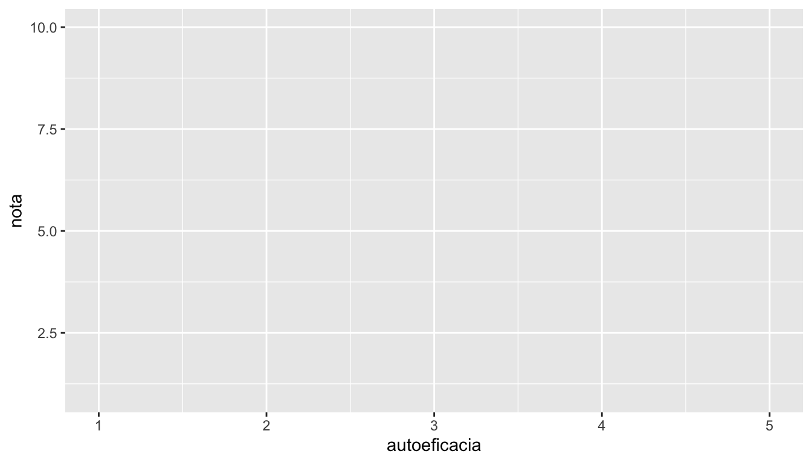
ggplot(encuesta, aes(x = autoeficacia, y = nota)) +
geom_point() # + los puntos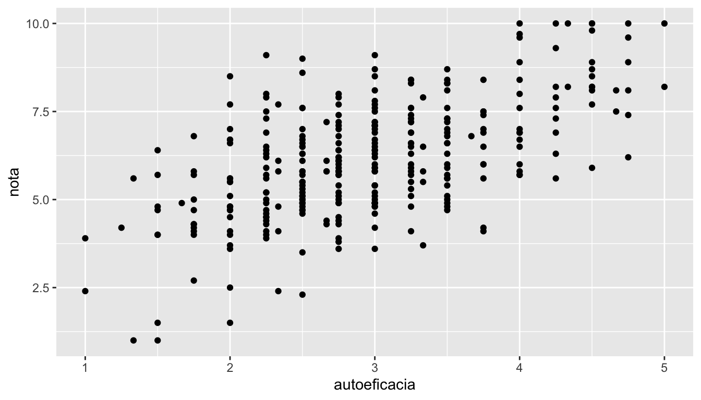
ggplot(encuesta, aes(x = autoeficacia, y = nota)) +
geom_point(alpha = 0.5) +
geom_smooth(method = "lm") + # + la recta de regresión
labs(x = "Autoeficacia académica (1-5)", y = "Nota media",
title = "Autoeficacia y rendimiento") + # + etiquetas
theme_minimal() # + un tema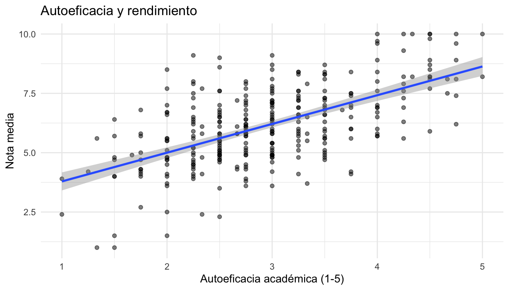
Asignar o fijar: dentro o fuera de aes()
Una propiedad visual (color, tamaño, forma, transparencia) puede depender de una variable o ser fija para todo el gráfico:
- Dentro de
aes():aes(color = sexo)asigna un color a cada valor de la variable y crea una leyenda. - Fuera de
aes():geom_point(color = "steelblue")pinta todos los puntos del mismo color.
encuesta |>
filter(sexo != "Prefiero no decirlo") |>
ggplot(aes(x = autoeficacia, y = nota, color = sexo)) +
geom_point(alpha = 0.5, size = 2) +
geom_smooth(method = "lm", se = FALSE) +
labs(x = "Autoeficacia académica (1-5)", y = "Nota media", color = NULL) +
theme_minimal()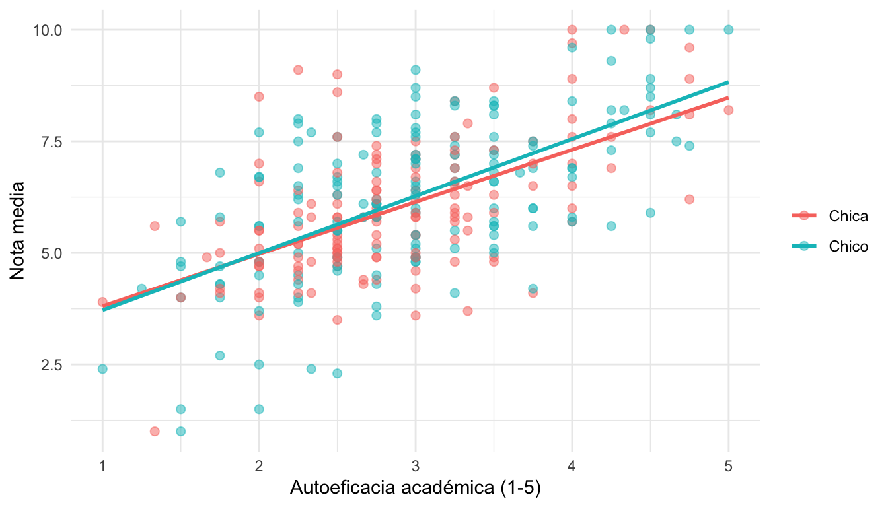
Observa que podemos empezar con una cadena de dplyr y pasar el resultado a ggplot() con |>. A partir de ahí, las capas se suman con +. Como el color está en aes() de ggplot(), se aplica a todas las capas: hay una recta para cada grupo.
Distribución de una variable
ggplot(encuesta, aes(x = nota)) +
geom_histogram(binwidth = 0.5, fill = "steelblue", color = "white") +
labs(x = "Nota", y = "Número de estudiantes") +
theme_minimal()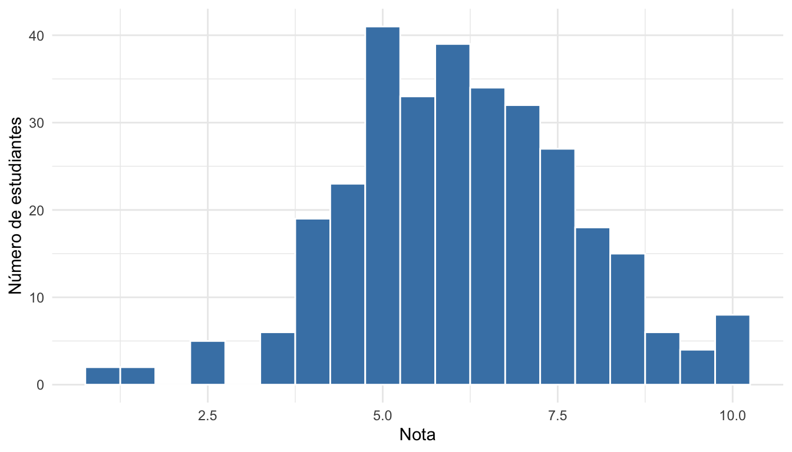
Para comparar la distribución en varios grupos, las curvas de densidad superpuestas son más legibles que varios histogramas:
ggplot(encuesta, aes(x = ansiedad, fill = ciclo)) +
geom_density(alpha = 0.4) +
labs(x = "Ansiedad ante los exámenes (1-5)", y = "Densidad", fill = NULL) +
theme_minimal()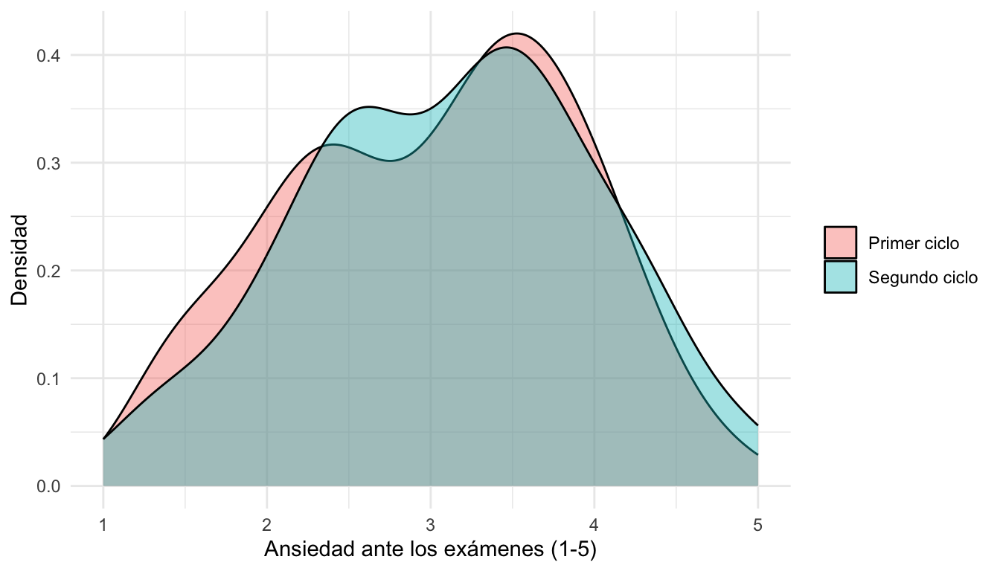
Comparar grupos: diagramas de caja
ggplot(encuesta, aes(x = curso, y = motivacion)) +
geom_boxplot(fill = "lightblue", outlier.shape = NA) +
geom_jitter(width = 0.15, alpha = 0.3) +
labs(x = NULL, y = "Motivación (1-5)") +
theme_minimal()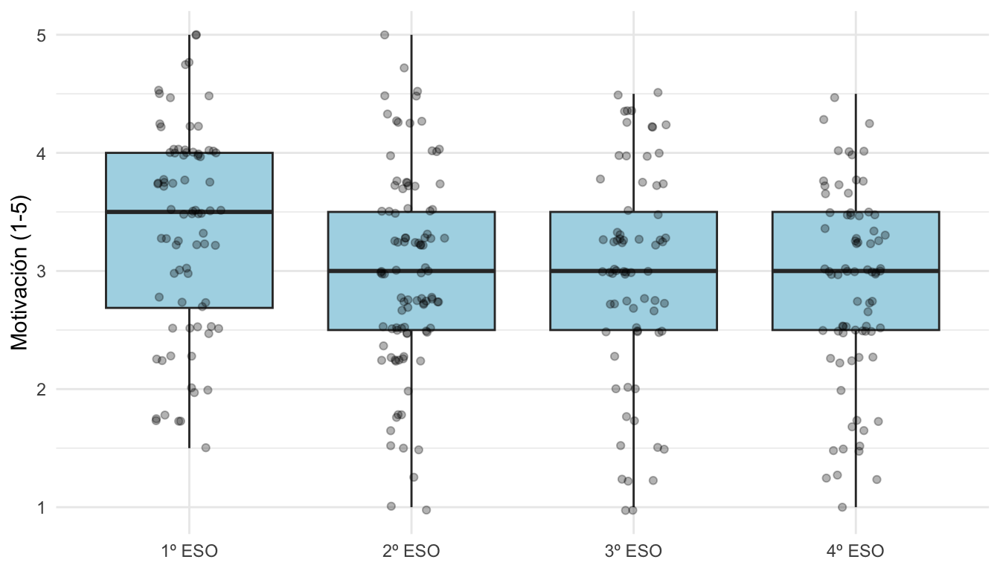
geom_jitter() añade los puntos individuales, con un pequeño desplazamiento horizontal al azar para que no se solapen. Con pocos datos, ver los puntos es más honesto que ver solo la caja. (outlier.shape = NA evita que los atípicos aparezcan dos veces).
Frecuencias: gráficos de barras
geom_bar() cuenta las filas de cada categoría. Con fill, cada barra se divide según otra variable, y position indica cómo:
ggplot(encuesta, aes(x = curso, fill = calificacion)) +
geom_bar() +
labs(x = NULL, y = "Número de estudiantes", fill = "Calificación") +
theme_minimal()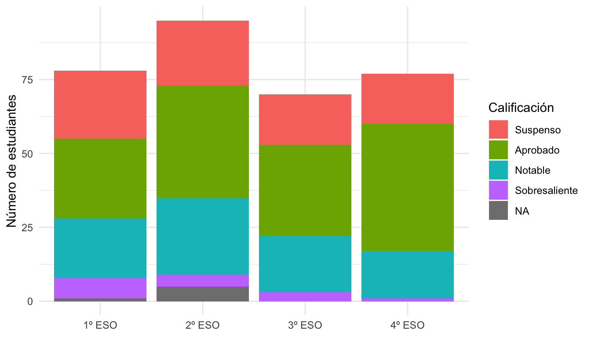
ggplot(encuesta, aes(x = curso, fill = calificacion)) +
geom_bar(position = "dodge") + # barras una al lado de otra
labs(x = NULL, y = "Número de estudiantes", fill = "Calificación") +
theme_minimal()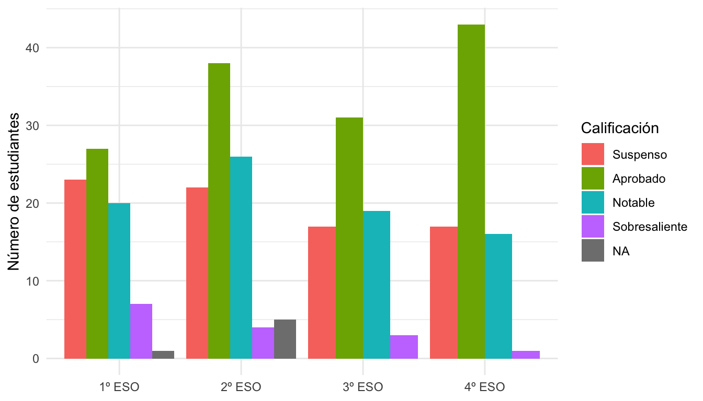
encuesta |>
filter(!is.na(calificacion)) |>
ggplot(aes(x = curso, fill = calificacion)) +
geom_bar(position = "fill") + # proporciones: cada barra suma 100 %
scale_y_continuous(labels = scales::percent) +
scale_fill_brewer(palette = "RdYlGn") + # una paleta de colores
labs(x = NULL, y = "Porcentaje", fill = "Calificación") +
theme_minimal()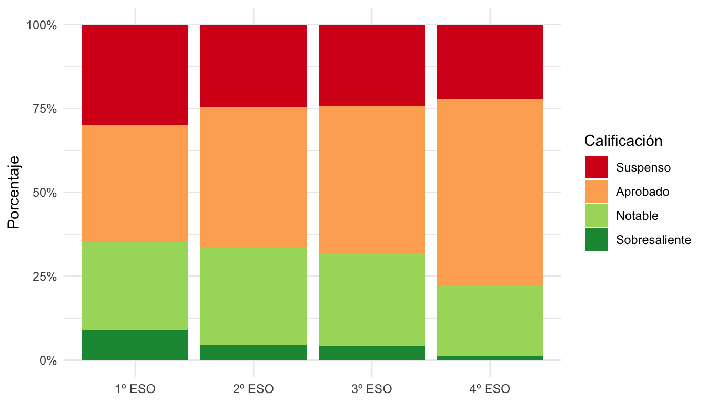
Si ya tenemos los valores calculados (por ejemplo, con summarise()), se usa geom_col(), que no cuenta sino que dibuja el valor de y:
encuesta |>
group_by(centro) |>
summarise(aprobados = mean(nota >= 5, na.rm = TRUE)) |>
ggplot(aes(x = reorder(centro, aprobados), y = aprobados)) +
geom_col(fill = "steelblue") +
coord_flip() + # barras horizontales
scale_y_continuous(labels = scales::percent) +
labs(x = NULL, y = "Porcentaje de aprobados") +
theme_minimal()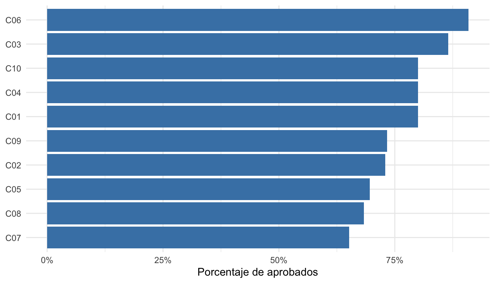
reorder(centro, aprobados) ordena los centros según su porcentaje de aprobados.
Paneles: facet_wrap()
facet_wrap() repite el gráfico para cada valor de una variable:
encuesta_centros |>
ggplot(aes(x = autoeficacia, y = nota)) +
geom_point(alpha = 0.4) +
geom_smooth(method = "lm") +
facet_wrap(~ zona) +
labs(x = "Autoeficacia académica (1-5)", y = "Nota media") +
theme_minimal()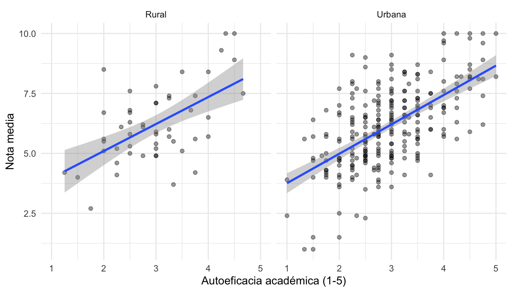
Medias por grupo y momento: el gráfico de una intervención
Con los datos en formato largo del bloque anterior, stat_summary() calcula y dibuja directamente la media de cada grupo y momento, y su error típico (mean_se):
ggplot(intervencion_larga, aes(x = momento, y = comprension, color = grupo, group = grupo)) +
stat_summary(fun = mean, geom = "line", linewidth = 1) +
stat_summary(fun = mean, geom = "point", size = 3) +
stat_summary(fun.data = mean_se, geom = "errorbar", width = 0.1) +
scale_x_discrete(labels = c("Pre", "Post", "Seguimiento")) +
labs(x = NULL, y = "Comprensión lectora (media ± ET)", color = "Grupo") +
theme_minimal() +
theme(legend.position = "bottom")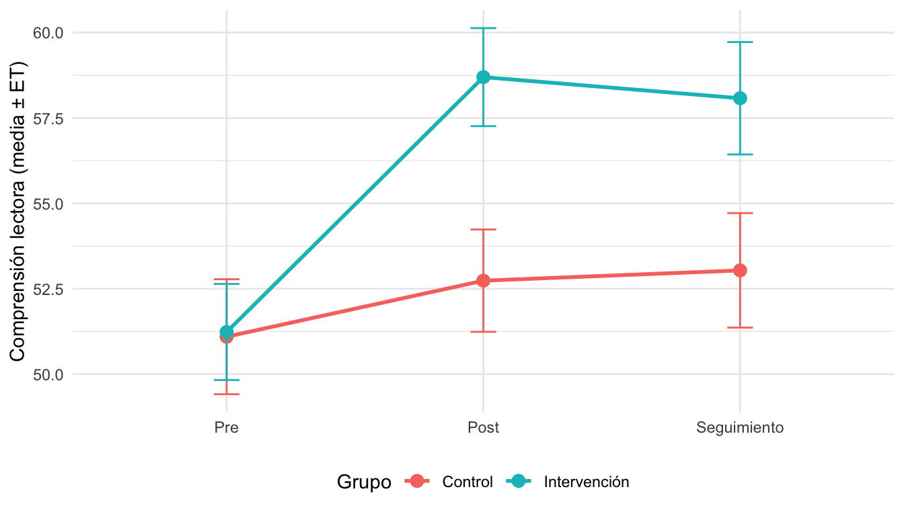
Ajustar el aspecto
| Para cambiar… | Usa… |
|---|---|
| Títulos de ejes y leyendas | labs(x = , y = , color = , fill = , title = ) |
| Colores | scale_color_brewer(), scale_fill_brewer(), scale_color_manual(values = c(...)) |
| Formato de los ejes | scale_y_continuous(labels = scales::percent, limits = c(0, 10)) |
| El aspecto general | theme_minimal(), theme_bw(), theme_classic() |
| Detalles | theme(legend.position = "bottom", text = element_text(size = 14)) |
Guardar un gráfico
ggsave() guarda el último gráfico en el formato que indique la extensión (.png, .pdf, .svg…):
ggsave("figura_intervencion.png", width = 16, height = 10, units = "cm", dpi = 300)
NotaTambién con RStudio
En la pestaña Plots, Export > Save as Image… guarda el gráfico eligiendo el formato y el tamaño en un cuadro de diálogo. Para un artículo es mejor ggsave(): el tamaño y la resolución quedan escritos en el código y son siempre los mismos.
2.5. Primeros análisis
TipObjetivo
Ejecutar e interpretar la salida de tres análisis básicos: correlación, prueba t y regresión lineal.
Punto de control: encuesta <- readRDS("checkpoints/encuesta_escalas.rds")
Correlación
La matriz de correlaciones entre varias variables:
encuesta |>
select(motivacion, ansiedad, autoeficacia, nota) |>
cor(use = "pairwise.complete.obs") |>
round(2) motivacion ansiedad autoeficacia nota
motivacion 1.00 -0.12 0.41 0.44
ansiedad -0.12 1.00 -0.33 -0.45
autoeficacia 0.41 -0.33 1.00 0.60
nota 0.44 -0.45 0.60 1.00Para contrastar una correlación concreta, con su intervalo de confianza y valor p:
cor.test(encuesta$autoeficacia, encuesta$nota)
Pearson's product-moment correlation
data: encuesta$autoeficacia and encuesta$nota
t = 13.237, df = 312, p-value < 2.2e-16
alternative hypothesis: true correlation is not equal to 0
95 percent confidence interval:
0.5237583 0.6661466
sample estimates:
cor
0.599678 Prueba t
¿Difiere la ansiedad ante los exámenes entre chicas y chicos? La sintaxis variable ~ grupo se lee “variable en función de grupo”, y es la misma que usan casi todos los modelos en R:
encuesta_2sexos <- encuesta |>
filter(sexo %in% c("Chica", "Chico"))
t.test(ansiedad ~ sexo, data = encuesta_2sexos)
Welch Two Sample t-test
data: ansiedad by sexo
t = 2.0385, df = 297.01, p-value = 0.04238
alternative hypothesis: true difference in means between group Chica and group Chico is not equal to 0
95 percent confidence interval:
0.007183184 0.407876853
sample estimates:
mean in group Chica mean in group Chico
3.16895 2.96142 - Por defecto, R aplica la corrección de Welch (no asume varianzas iguales). Para la prueba t clásica:
var.equal = TRUE. mean in group ...: las medias de cada grupo;95 percent confidence interval: el intervalo de la diferencia de medias.
Para muestras relacionadas (por ejemplo, pre y post en los mismos estudiantes), paired = TRUE:
grupo_intervencion <- intervencion |>
filter(grupo == "Intervención")
t.test(grupo_intervencion$comprension_post, grupo_intervencion$comprension_pre, paired = TRUE)
Paired t-test
data: grupo_intervencion$comprension_post and grupo_intervencion$comprension_pre
t = 9.3004, df = 55, p-value = 7.02e-13
alternative hypothesis: true mean difference is not equal to 0
95 percent confidence interval:
5.855882 9.072689
sample estimates:
mean difference
7.464286 Regresión lineal
La función lm() (linear model) usa la misma sintaxis de fórmula: respuesta ~ predictor1 + predictor2 + ...
modelo <- lm(nota ~ autoeficacia + ansiedad, data = encuesta)
summary(modelo)
Call:
lm(formula = nota ~ autoeficacia + ansiedad, data = encuesta)
Residuals:
Min 1Q Median 3Q Max
-4.3194 -0.8083 -0.0351 0.7757 3.1708
Coefficients:
Estimate Std. Error t value Pr(>|t|)
(Intercept) 4.70288 0.44087 10.667 < 2e-16 ***
autoeficacia 1.02240 0.09213 11.098 < 2e-16 ***
ansiedad -0.51155 0.08482 -6.031 4.61e-09 ***
---
Signif. codes: 0 '***' 0.001 '**' 0.01 '*' 0.05 '.' 0.1 ' ' 1
Residual standard error: 1.258 on 311 degrees of freedom
(6 observations deleted due to missingness)
Multiple R-squared: 0.4267, Adjusted R-squared: 0.423
F-statistic: 115.7 on 2 and 311 DF, p-value: < 2.2e-16- Coefficients: para cada predictor, el coeficiente (
Estimate), su error típico y su valor p (Pr(>|t|)). El coeficiente deautoeficaciaes el cambio esperado en la nota por cada punto más de autoeficacia, manteniendo constante la ansiedad. - Multiple R-squared: la proporción de varianza de la nota explicada por el modelo.
Los factores se pueden incluir como predictores: R toma el primer nivel como referencia.
Los resultados son listas
El resultado de cor.test(), t.test() o lm() es una lista (sesión 1). Lo que vemos en la consola es solo un resumen; podemos extraer cada elemento con $ para usarlo en una tabla o en el texto de un informe:
prueba <- t.test(ansiedad ~ sexo, data = encuesta_2sexos)
names(prueba) [1] "statistic" "parameter" "p.value" "conf.int" "estimate"
[6] "null.value" "stderr" "alternative" "method" "data.name" prueba$p.value[1] 0.04238109prueba$estimatemean in group Chica mean in group Chico
3.16895 2.96142 coef(modelo) (Intercept) autoeficacia ansiedad
4.7028783 1.0224025 -0.5115498
Nota
Esta misma lógica de fórmulas es la base de los modelos más avanzados que veréis en otros cursos: modelos mixtos, SEM (con el paquete lavaan) o metaanálisis (con metafor).
2.6. Resultados en Quarto y tu propio proyecto con renv
TipObjetivo
Reunir en un informe Quarto tablas, gráficos y resultados estadísticos, y dejar preparado un proyecto propio y reproducible.
Un informe con resultados
Todo lo de esta sesión se puede incluir en un documento Quarto como vimos en la sesión 1:
- Una tabla de
dplyrse muestra con formato conknitr::kable(), con#| label: tbl-...y#| tbl-cap:. - Un gráfico de
ggplot2aparece en el informe donde está su bloque, con#| label: fig-...y#| fig-cap:. - Los resultados de las pruebas se escriben en el texto con código, extrayéndolos de la lista:
```{r}
prueba <- t.test(ansiedad ~ sexo, data = encuesta_2sexos)
```
Las chicas mostraron una ansiedad media de `r round(prueba$estimate[1], 2)`, frente a
`r round(prueba$estimate[2], 2)` en los chicos
(_t_ = `r round(prueba$statistic, 2)`, _p_ = `r round(prueba$p.value, 3)`).Se convierte en: Las chicas mostraron una ansiedad media de 3.17, frente a 2.96 en los chicos (t = 2.04, p = 0.042).
Si mañana se corrige un dato, al volver a generar el informe todos los números se actualizan.
Tu propio proyecto con renv
Para cada análisis nuevo, crea un proyecto con renv. Así, dentro de un año podrás volver a ejecutarlo con las mismas versiones de los paquetes, y cualquier colaborador podrá reproducirlo con renv::restore().
File > New Project > New Directory > New Project. Elige un nombre y una carpeta, y marca la casilla Use renv with this project. (Si el proyecto ya existe, puedes activar
renven cualquier momento ejecutandorenv::init()).Crea dentro una carpeta
datos/y copia en ella tus ficheros de datos.Instala los paquetes que vayas a usar (con
install.packages()o desde la pestaña Packages). Se instalan solo en este proyecto:install.packages(c("tidyverse", "readxl", "psych"))Anota las versiones en
renv.lock:renv::snapshot()Cada vez que instales o actualices un paquete, repite
renv::snapshot(). Si tienes dudas de si está al día:renv::status().
TipConsejos
renvguarda una copia de cada versión de cada paquete en una caché compartida, así que instalar el mismo paquete en otro proyecto es casi instantáneo.- Para compartir el proyecto (con un compañero, en un repositorio, como material suplementario de un artículo), incluye
renv.lock,.Rprofileyrenv/activate.R. No hace falta incluir la carpetarenv/library.
Ejercicio 2
Ve a sesion2_ejercicios.qmd, Ejercicio 2. Una pregunta de principio a fin (15 minutos).
NotaResumen de la sesión
| Quiero… | Función |
|---|---|
| Encadenar operaciones | \|> (“y después”) |
| Filtrar filas | filter(), %in%, !is.na() |
| Ordenar | arrange(), desc() |
| Seleccionar, renombrar, reordenar columnas | select(), starts_with(), where(), rename(), relocate() |
| Crear o recodificar variables | mutate(), if_else(), case_when() |
| La misma operación en varias columnas | across() |
| Puntuación de una escala | rowMeans(pick(...), na.rm = TRUE) (invertir un ítem 1-5: 6 - item) |
| Contar | count() |
| Resumir (por grupos) | group_by() + summarise(), n() |
| Filas por posición | slice_max(), slice_min(), slice_head() |
| De ancho a largo y al revés | pivot_longer(), pivot_wider() |
| Unir tablas | left_join(by = ...), inner_join(), anti_join() |
| Gráficos | ggplot() + geom_*(), aes(), labs(), scale_*(), facet_wrap(), theme_*(), ggsave() |
| Correlación | cor(), cor.test() |
| Prueba t | t.test(y ~ grupo), t.test(x, y, paired = TRUE) |
| Regresión | lm(y ~ x1 + x2), summary(), coef() |
| Proyecto reproducible | renv::init(), renv::snapshot(), renv::restore() |
Para seguir aprendiendo
- R para Ciencia de Datos (2ª ed., en español): https://es.r4ds.hadley.nz
- Chuletas (cheatsheets) de
dplyr,ggplot2, Quarto y otros paquetes: menú Help > Cheat Sheets de RStudio, o https://posit.co/resources/cheatsheets/ - Guía de Quarto: https://quarto.org/docs/guide/
- Documentación de
renv: https://rstudio.github.io/renv/